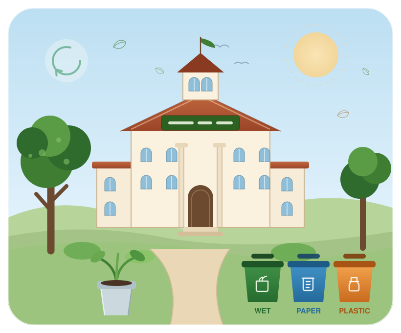
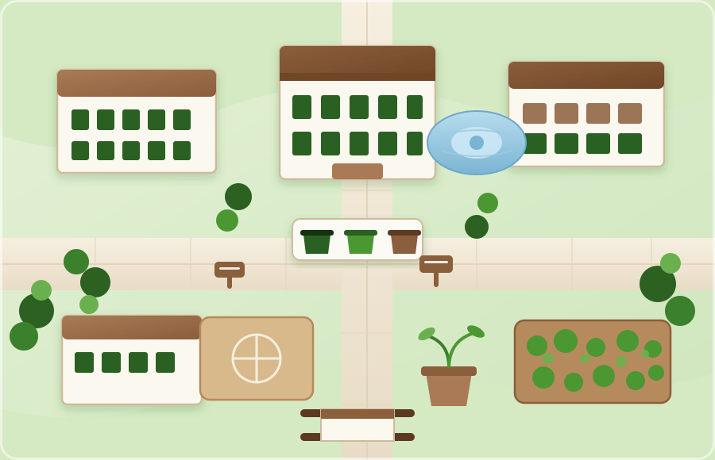

01
Reduce
Decrease avoidable single-use waste and unnecessary paper use.
A practical campus-level initiative that turns paper and plastic waste into useful, eco-friendly products — and asks one honest question: how can our campus reduce waste by sorting, recycling and reusing paper and plastic?

Every campus produces waste. What makes a waste campus different is that the recoverable parts get mixed in with the rest — paper with food, plastic with everything — so the material is contaminated, the bin is useless, and something that still holds real value is simply lost.
This project works on the two streams that matter most on a day-to-day campus: paper and plastic. Both come from the same three places — classrooms, offices and the canteen — and both can be handled safely with nothing more than labelled bins, a clear routine and cooperation from the people who already handle waste on campus.
The approach is deliberately small. Nothing here needs new machinery, budget approval or a change in how the campus runs. It needs three labelled bins, an honest label on each one, and people who put things in the right one.
Paper can be collected for recycling, or used to make seed paper where suitable materials and safe methods are available. Clean, suitable waste plastic can be reused to make plant pots or trays instead of being discarded. Both routes end in something a campus can actually use.
A plan is only as good as the places it touches. Here is the campus map, marked with the eight points where waste is generated, sorted and recovered.

Used sheets, notes and paper scraps may be thrown away even when they can be recycled.
Disposable plastic containers and packaging can remain in the environment for a long time.
Mixed waste increases litter, makes recycling difficult and wastes materials that still have value.
Every objective maps to a unit of the Environmental Studies syllabus — and to something a student, a classroom or the housekeeping team can actually do.
01
Decrease avoidable single-use waste and unnecessary paper use.
02
Keep paper, clean plastic and wet waste in separate labelled bins.
03
Explore seed paper and useful plant pots and trays made from suitable recovered materials.
04
Send suitable paper and plastic to appropriate recycling channels.
05
Check what the bins hold and use what you learn to improve the plan.
The project is written so that each Environmental Studies unit has a concrete campus-level answer attached to it.
Four students of Environmental Studies (EVS), working as one team on a single campus problem.
By separating waste at source, reducing disposable materials and sending suitable paper and plastic for recycling, our campus can become cleaner and more resource-efficient.